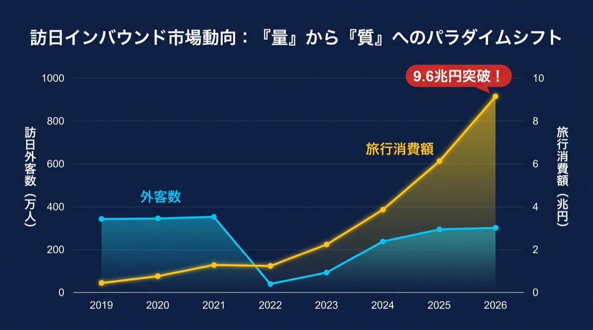

政府・観光庁・JNTOが公表する膨大な統計データ。
PROTECHはそのすべてを網羅し、複雑な数字をビジネスに直結するシンプルな言葉に変換します。
JNTO・観光庁が発表する訪日外客数、消費動向、国籍別データ、地域別統計——あらゆる公式データを一箇所で確認できます。
複雑な統計を、専門知識がなくても理解できる平易な言葉と図版で整理。数字が示す「意味」を、忙しい経営者・担当者に直接届けます。
発表されたばかりの最新統計をいち早くレポートに反映。市場の変化をリアルタイムに追い続け、意思決定のスピードを上げます。

訪日客数が増えているのは良いことなのか。どの国のお客様が増えているのか。その変化がビジネスにとって何を意味するのか——PROTECHのレポートはその答えを直接示します。
消費額の増減、人気エリアの変化、購買カテゴリのトレンドを、グラフと短い文章で整理。資料を読む時間がない方でも、3分で市場の全体像を把握できます。
難しい専門用語ではなく、「この市場でどう動くべきか」という視点でまとめられたPROTECH独自の解説が、データと実務の橋渡しをします。
毎月のレポートには、インバウンドビジネスに関わるすべての方が知っておくべき情報を凝縮しています。
韓国・台湾・米国・中国など国別の人数と伸び率を一目で確認。どの市場が今、熱いのかがわかります。
誰がいくら使っているか。免税品・宿泊・飲食など、カテゴリ別の消費傾向も整理してお届けします。
数字の増減だけでなく「なぜ変化したのか」の背景もPROTECHが解説。データの文脈を正確に理解できます。
「この変化がビジネスにとって何を意味するか」をPROTECHの視点でまとめ。即座に活用できる洞察を提供します。
AIが自動生成した最新の訪日インバウンド市場データとビジネス洞察。